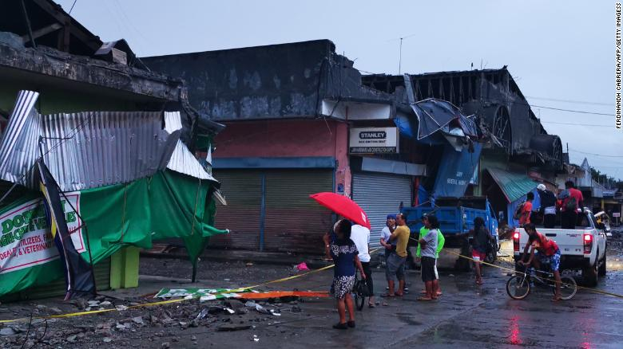
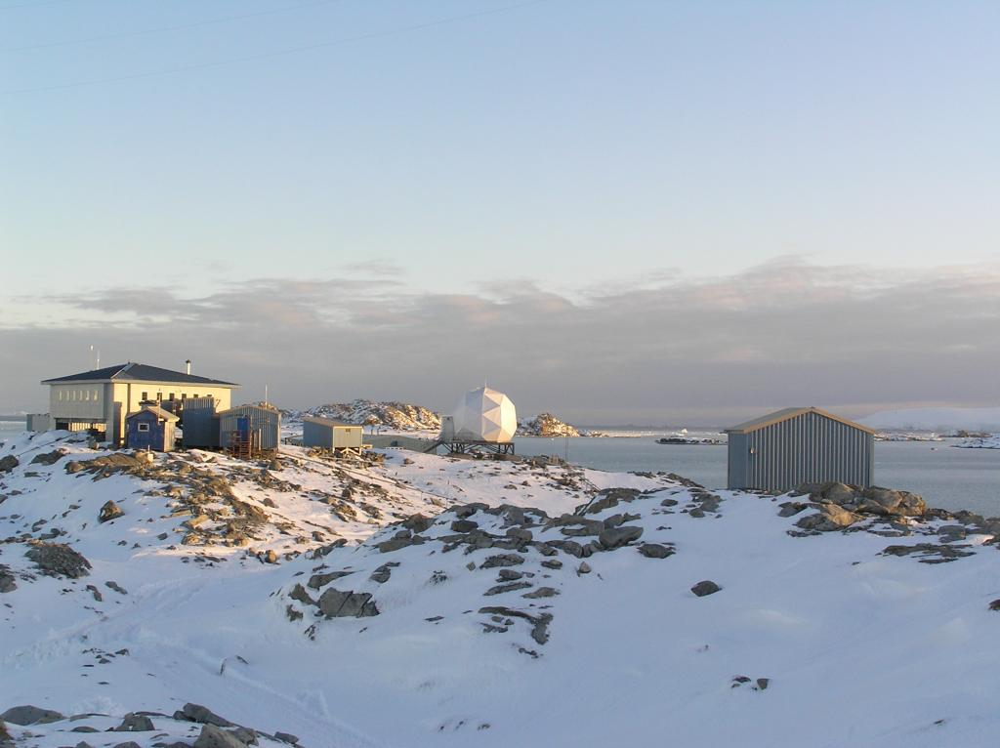
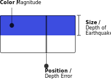

Design By: Xingwei Huang
Data Source: USGS
This visualization captures earthquakes that have happened in the past month, from 11/16/2019 to 12/15/2019. You may use the slider on the left to view earthquakes that have happened during each day or scroll down to read more about earthquake measurements.
The largest earthquake ( in terms of magnitude ) that happened during this past month was at 6km south of Magsaysay, Philippines (12/15/2019). It's magnitude was 6.8, a total of 84 people were injured in the earthquakea and a 6-year-old girl was killed during this earthquake. An earthquake which maginitude is between 6.1 ~ 6.9, may cause a lot of damage in very populated areas.

The depth measures where the earthquake begins to rupture. In general, deeper earthquakes are less damaging because their energy dissipates before it reaches the surface. The 'deepest' earthquake which has happened during this past month was at south of the Fiji Islands 11/30/2019, with a depth of 614.01km and a magnitude of 5.5.
Sometimes when depth is poorly constrained by available seismic data, the location program will set the depth at a fixed value. For example, 33 km is often used as a default depth for earthquakes determined to be shallow, but whose depth is not satisfactorily determined by the data, whereas default depths of 5 or 10 km are often used in mid-continental areas and on mid-ocean ridges since earthquakes in these areas are usually shallower than 33 km.
12/15/2019, an earthquake with 1.89 maginitude and -3.76km depth happened in 28km east of Honaunau-Napoopoo, Hawaii. How can an earthquake have a negative depth? Sometimes, because of the density of the seismic network and the close proximity of the seismic stations to an earthquake epicenter, we are able to determine a very precise depth. When the earthquake depth is very shallow, it can be reported as a negative depth.
MagError measures the uncertainty of reported magnitude of the event. The estimated standard error of the magnitude. It's value varies between 1 and 100. Smaller numbers reflect a better certainty of the data.
The uncertainty corresponds to the specific magnitude type being reported and does not take into account magnitude variations and biases between different magnitude scales.
For example magError of this earthquake is 1.34. During this passed month, the largest value of magError of all the earthquake which have happened is 5.31.
Similar to magError, depthError represents uncertainty of reported depth of the event in kilometers. It's value varies between 1 and 100. Smaller numbers reflect a better certainty of the data.
During this passed month, the largest value of depthError of all the earthquake which have happened is 8608.9km.
There are about hundreds of seismic stations around the world. This Palmer Station at Antarctica is one of them.
To locate the epicenter of an earthquake, scientists must have seismograms from at least THREE seismic stations.
Below is the ‘calendar’ view of all earthquakes that have happened between 11/16/2019 To 12/15/2019.
If the color hue is close to warmer orange, it means the earthquake has larger magnitude;
If the colored rectangle has larger height, it means the earthquake has greater depth;